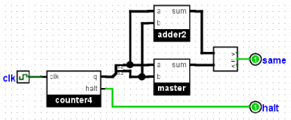

Testing multiple files
In the classroom example, you will have many files that you wish to test for their equivalence, and you won't want to read the output for each of the student's solutions.
Building comparison into the circuit
One approach is to build a test circuit that does the comparison directly. Here, we create an additional circuit within the testing file that contains our solution circuit. In our overall testing circuit, we include both the subcircuit from master.circ and the subcircuit from the solution circuit located directly into the nested circuit. We wire it so that there is just one output, which is 1 as long as the two subcircuits agree.

Now we can simply run Logisim substituting each query file. For any correct solution, the only output will be "1".
Using redirection and shell scripts
If you're quite comfortable with the command line, you can build your own shell script to accomplish this. Here, we'll use redirection (the > operator) to save the output of each circuit into a file. For instance, we might issue the following two commands to collect the output of the master circuit and the query circuit.
java -jar logisim-evolution.jar test.circ
-tty table > out-master.txt
java -jar logisim-evolution.jar test.circ
-tty table -sub master.circ query.circ > out-query.txt
Now we've created two different files. We can then compare the two output files using a program built for that purpose. Under Linux or MacOS X, you might want to use the cmp or diff command-line utilities. Under Windows, you might want to use command-line utilities fc or WinMerge.
To process several query files, you would like want to build a simple program such as a shell script to iterate through each and comparing the output. Here is how I would do it under Linux's bash:
RUN_TEST="java -jar logisim-filename.jar adder-test.circ -tty table"
${RUN_TEST} > output-master.txt
for QUERY_FILE in query*.circ
do
if ${RUN_TEST} -sub ^master.circ ${QUERY_FILE} | cmp -s output-master.txt
then
echo "${QUERY_FILE} OK"
else
echo "${QUERY_FILE} different"
fi
done
Next: Test Vector.